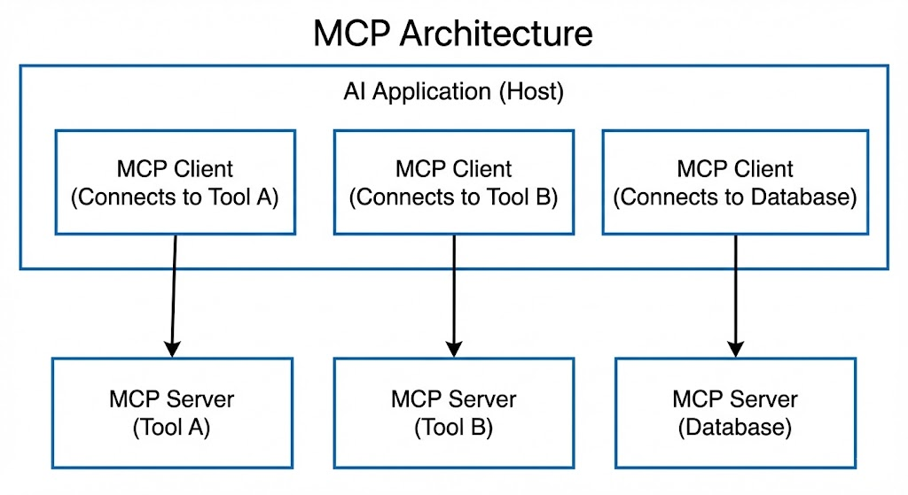

Prompt->Context->Skills
从 Prompt 到上下文工程到 Skills：AI 交互范式的演进与 Vibe Coding 的崛起
引言：AI 交互的三次革命
2022 年底，ChatGPT 的横空出世标志着人工智能进入了一个全新的时代。短短两年多时间，我们与 AI 的交互方式已经经历了三次深刻的范式转变：
第一次革命：Prompt Engineering（提示工程） —— 我们学会了如何与 AI 对话，用精心设计的提示词来引导模型输出。
第二次革命：Context Engineering（上下文工程） —— 我们意识到 AI 的能力不仅取决于提示词本身，更取决于提供给它的上下文环境。RAG、记忆系统、外部知识库的引入，让 AI 从”闭卷考试”变成了”开卷考试”。
第三次革命：Skills & Agentic AI（技能与智能体） —— AI 不再只是被动回答问题，而是能够主动调用工具、执行动作、与其他 Agent 协作，成为真正的”数字工作者”。
与此同时，一种全新的编程范式正在悄然兴起 —— Vibe Coding（氛围编程），它正在重新定义人类与 AI 在软件开发中的协作关系。
本文将带你完整走过这段演进历程，无论你是刚接触 AI 的初学者，还是希望深入理解底层逻辑的技术从业者，都能从中获得系统性的认知提升。
第一章：Prompt Engineering —— 与 AI 对话的艺术
1.1 什么是 Prompt Engineering？
Prompt Engineering（提示工程）是指通过设计和优化输入提示（prompt），来引导大型语言模型（LLM）产生更准确、更有用输出的技术。它是最基础、最直观的 AI 交互方式 —— 你输入文字，AI 返回文字。
但Prompt Engineering 远不止是”问问题”这么简单。正如 2025 年的最佳实践所强调的：“Specific prompts are better prompts”（具体的提示才是好提示）。
一个糟糕的例子：
"解释气候变化"一个优秀的例子：
"为高中生撰写一段关于气候变化的三段式总结，使用项目符号，
保持中立语气，控制在 300 字以内。"1.2 核心技术技法
Zero-Shot Prompting（零样本提示）
直接向模型提出任务，不提供任何示例。这是最简单的方式，适用于模型已经具备相关知识的任务。
将以下英文翻译成中文：
"The quick brown fox jumps over the lazy dog."Few-Shot Prompting（少样本提示）
提供 3-5 个高质量的示例，让模型学习模式和格式。研究表明，这是提升输出质量最有效的方法之一。
将情感分类为正面、负面或中性。
示例 1：
文本："这部电影太棒了！"
情感：正面
示例 2：
文本："服务态度很差"
情感：负面
示例 3：
文本："今天天气晴朗"
情感：中性
待分类文本："这个产品完全不符合预期"
情感：Chain-of-Thought (CoT) 思维链
要求模型展示推理过程，而非直接给出答案。这对数学问题、逻辑推理尤其有效。
问题：一个农场有 35 只鸡和 28 只兔子。农场主卖掉了一半的鸡和
三分之一的兔子。还剩多少只动物？
请一步一步思考：模型会输出：
1. 初始鸡的数量：35 只
2. 卖掉一半的鸡：35 ÷ 2 = 17.5，取整为 17 只
3. 剩余鸡：35 - 17 = 18 只
4. 初始兔子数量：28 只
5. 卖掉三分之一的兔子：28 ÷ 3 ≈ 9 只
6. 剩余兔子：28 - 9 = 19 只
7. 总共剩余：18 + 19 = 37 只ReAct (Reasoning + Acting) 推理+行动
结合推理和工具调用的先进技法。模型不仅思考，还能决定何时使用外部工具。
你需要搜索最新信息来回答用户问题。
问题：苹果公司今天的股价是多少？
思考：我需要搜索苹果的最新股价
行动：搜索 "Apple stock price today"
观察：[搜索结果：AAPL $182.50, +1.2%]
思考：我已经获得了股价信息
最终答案：苹果公司今天股价为 182.50 美元，上涨 1.2%1.3 2025 年的前沿技术
Recursive Self-Improvement Prompting (RSIP) 递归自改进提示
让 AI 批判并改进自己的输出，通过多轮迭代达到更高质量。
流程： 1. 生成：创建初始输出 2. 批判性评估：让模型使用特定标准识别弱点 3. 改进：基于批评生成增强版本
实践表明，这种方法可以减少约 60% 的修改周期。
Multi-Perspective Simulation (MPS) 多视角模拟
在单次对话中运行”虚拟专家小组”，让模型从不同角度分析问题。
请从以下三个角度分析这个商业决策：
1. 财务总监（关注成本与 ROI）
2. 技术总监（关注可行性与技术债务）
3. 市场总监（关注用户体验与竞争优势）
每个视角都需要：
- 阐述核心观点
- 提出潜在风险
- 给出具体建议
最后，请综合三个视角给出整体评估。1.4 Prompt Engineering 的局限性
尽管 Prompt Engineering 强大，但它存在根本性限制：
Fragility（脆弱性）：输入的微小变化、系统版本更新，甚至模型的随机性，都可能导致输出质量波动
Limited Context（上下文限制）：模型的上下文窗口有限，无法处理大量外部信息
No Real-Time Knowledge（无实时知识）：模型只能依赖训练数据，无法获取最新信息
No Action Capability（无行动能力）：模型只能生成文本，无法执行实际操作
这些限制催生了下一个演进阶段 —— Context Engineering。
第二章：Context Engineering —— 构建 AI 的操作环境
2.1 从 Prompt 到 Context 的范式转移
Context Engineering（上下文工程）是 2024-2025 年兴起的新 discipline。如果说 Prompt Engineering 是”写好问题”，Context Engineering 就是”构建完整的操作环境”。
核心定义： > Context Engineering 是系统地设计和管理提供给 LLM 的所有信息 —— 包括提示、检索结果、对话历史、元数据、工具状态 —— 以控制模型的推理和输出，而无需修改模型权重。
简单来说，Context Engineering = Prompt Engineering + RAG + 记忆管理 + 工具状态 + 环境配置
2.2 RAG：检索增强生成
RAG（Retrieval-Augmented Generation）是 Context Engineering 的核心组件。它解决了 LLM 无法访问私有数据、无法获取实时信息的问题。
RAG 工作流程：
用户查询 → 嵌入向量 → 向量数据库检索 → 获取 Top-K 相关文档
→ 将文档注入提示上下文 → LLM 生成回答实际应用场景：
场景 1：企业知识库问答
基于以下公司内部文档回答问题：
<documents>
[从向量数据库检索的相关文档片段]
</documents>
问题：我们的年假政策是什么？
请引用相关文档的具体章节并标注页码。场景 2：客服机器人
你是一个客服助手。以下是相关的产品文档和历史对话：
<context>
[产品手册片段]
[用户之前的工单记录]
[常见问题解答]
</context>
用户问题：我的订单什么时候能到？
订单号：#123452.3 上下文工程的技术支柱
1. Prompt Design（提示设计）
动态提示模板，根据用户、任务和系统状态组装不同的提示。
# 动态提示模板示例
def build_prompt(user_type, task, context):
system_prompt = f"你是一个{user_type}专家助手。"
user_prompt = f"任务：{task}\n\n上下文：{context}"
return system_prompt + user_prompt2. Context Composition（上下文组合）
现代 AI 系统需要组合多层上下文：
- 对话历史：保持对话连贯性
- 检索结果：外部知识注入
- 当前工具状态：告诉 AI 有哪些工具可用
- Agent 目标与计划：长期任务的状态跟踪
- 用户画像/偏好：个性化设置
context_stack = {
"system_instructions": "你是一个研究助手...",
"user_profile": {"role": "研究员", "expertise": "AI"},
"conversation_history": [...],
"retrieved_documents": [...],
"available_tools": ["search", "calculator", "code_runner"],
"current_task_state": {"step": 3, "goal": "完成报告"}
}3. Memory Systems（记忆系统）
生产级 Agent 需要四层记忆架构：
| 记忆类型 | 描述 | 技术实现 |
|---|---|---|
| Short-Term Memory (STM) | 当前对话的短期上下文 | 滑动窗口，保留最近 N 轮对话 |
| Working Memory | 当前任务的临时状态 | 变量存储，任务完成即清除 |
| Long-Term Memory (LTM) | 用户偏好、历史交互 | 向量数据库持久化存储 |
| Episodic Memory | 特定事件/经验的记忆 | 结构化存储，支持语义检索 |
2.4 Prompt Engineering vs Context Engineering
| 维度 | Prompt Engineering | Context Engineering |
|---|---|---|
| 关注点 | 提示词的措辞和结构 | 完整的输入环境设计 |
| 范围 | 单次交互 | 多轮对话 + 外部系统 |
| 技术栈 | 自然语言 + 模板 | RAG + 向量DB + 记忆系统 |
| 目标 | 优化单次输出 | 塑造持续可靠的行为 |
| 适用场景 | 简单问答、内容生成 | 复杂应用、生产系统 |
关键洞察： > “Prompt Engineering 优化即时输出，Context Engineering 治理模型在推理前看到的所有上下文，塑造生产系统中的持续行为。”
第三章：Skills、Tool Use 与 Agentic AI —— 从说话到行动
3.1 工具调用：AI 的”手”和”脚”
如果说 Context Engineering 给了 AI “眼睛”（看外部信息），那么 Tool Use（工具调用）就给了 AI “手”和”脚”（执行动作）。
Tool Calling 的定义： > 工具调用是 LLM 决定使用外部功能（运行代码、调用 API、搜索网页、操作数据库）来完成模型自身无法独立完成的任务的过程。
工具调用的决策流程：
1. 解析用户查询 → 理解用户想要什么
2. 映射意图到工具模式 → 对比可用工具描述
3. 决定是否需要工具 → 纯推理 vs 需要执行
4. 生成结构化工具调用 → JSON 格式的函数调用
5. 在外部执行工具 → Python/API/数据库查询
6. 将输出返回给 LLM → 工具执行结果
7. LLM 决定下一步 → 继续调用工具或直接回答3.2 Function Calling 实战示例
示例：天气查询 Agent
首先，定义工具的模式（Schema）：
{
"name": "get_weather",
"description": "获取指定城市的当前天气",
"parameters": {
"type": "object",
"properties": {
"city": {
"type": "string",
"description": "城市名称，如 '北京'、'上海'"
},
"unit": {
"type": "string",
"enum": ["celsius", "fahrenheit"],
"description": "温度单位"
}
},
"required": ["city"]
}
}用户输入：“北京今天天气怎么样？”
LLM 的决策过程：
思考：用户询问北京天气，我需要调用 get_weather 工具
工具调用：{"tool": "get_weather", "arguments": {"city": "北京", "unit": "celsius"}}后端执行工具，返回：
{
"temperature": 22,
"condition": "晴朗",
"humidity": "45%"
}LLM 生成最终回答：
北京今天天气晴朗，气温 22°C，湿度 45%，是个出行的好天气！3.3 MCP：模型上下文协议 —— AI 的”USB-C”
2024 年底，Anthropic 推出了 MCP（Model Context Protocol），这是一个开放标准协议，旨在标准化 AI 系统与外部工具和数据源的交互方式。
MCP 的核心愿景： > “就像 USB-C 为各种设备提供通用连接一样，MCP 为 AI 模型提供统一的接口来连接不同的工具和数据源。”
MCP 架构：

MCP 2025 年路线图包括：
- 远程 MCP 连接：支持 OAuth 2.0 认证与授权
- 分发与发现：包管理、安装工具、服务器注册
- Agent 支持：分层 Agent 系统、交互式工作流、流式结果
MCP 正在快速成为行业标准，类似于当年的 LSP（Language Server Protocol）。
3.4 A2A：Agent-to-Agent 协议 —— AI 的”社交语言”
如果说 MCP 是 AI 与工具的通用接口，那么 A2A（Agent-to-Agent Protocol） 就是 AI 与 AI 之间的通用语言。
2025 年 4 月，Google 推出了 A2A 协议，这是一个开放标准，旨在让不同框架、不同厂商的 AI Agent 能够发现彼此、协商任务、协作完成复杂工作流。
A2A 的五大设计原则：
- 拥抱自然 Agent 能力：不强制改变 Agent 的工作方式
- 基于现有标准：使用 HTTP、JSON-RPC 等成熟技术
- 企业级安全：内置认证、授权、加密
- 支持长时间任务：异步执行、状态更新、推送通知
- 模态无关：支持文本、音频、视频、结构化数据
A2A 的核心概念：
| 组件 | 描述 |
|---|---|
| Agent Cards | JSON 元数据文件，描述 Agent 的能力、身份、端点 |
| Task Management | 任务生命周期管理：发起、状态更新、完成通知 |
| Collaboration | Agent 间交换上下文、协商执行方式 |
| UX Negotiation | 协商内容类型和格式，适应不同 UI 能力 |
实际应用场景：
招聘流程自动化：
招聘经理 Agent → 发布招聘需求
↓
猎头 Agent A → 搜索候选人
↓
猎头 Agent B → 安排面试
↓
背景调查 Agent → 执行背景核查
↓
所有结果汇总 → 招聘经理 Agent每个 Agent 可能来自不同厂商、使用不同框架，但通过 A2A 协议可以无缝协作。
3.5 现代 Agent 架构
一个生产级的 AI Agent 可以形式化定义为：
Agent := <Perception, Memory, Reasoning, Planning, Action, Feedback>各组件详解：
| 组件 | 功能 | 技术实现 |
|---|---|---|
| Perception | 接收输入 | 文本解析、API 适配器、日志读取 |
| Memory | 存储状态 | 向量 DB、文档存储、短期上下文 |
| Reasoning | 推理决策 | LLM 推理 + CoT/ReAct/ToT |
| Planning | 任务规划 | 任务分解、工具选择、执行图 |
| Action | 执行动作 | 工具调用、API 请求、代码执行 |
| Feedback | 反馈学习 | 错误分析、自我批评、记忆更新 |
2025 年的 Agent 类型：
- Deep Research Agents：自主进行深度研究，如 Perplexity、Grok
- Coding Agents：Devin、Cursor IDE Agents，自主编写、调试、测试代码
- CUA (Computer-Using Agents)：模拟人类操作电脑界面，如 AutoGPT、SIMA
- Multi-Agent Systems：多个专业 Agent 协作，如 CrewAI、AutoGen
第四章：Vibe Coding —— 编程范式的颠覆
4.1 什么是 Vibe Coding？
Vibe Coding 是 2024-2025 年兴起的一种全新编程范式。它不关注代码的具体语法，而是关注”氛围”——开发者用自然语言描述想要的功能和感觉，AI 负责生成具体的代码实现。
核心定义： > Vibe Coding 是一种开发方法，开发者使用自然语言提示 AI 工具生成软件代码。它将重点从手动编码转移到 AI 引导的构建方式。
Vibe Coding 的工作流程：

4.2 Vibe Coding 的起源与演进
2023 年：Reddit 上的开发者开玩笑说他们在用 ChatGPT “vibe” 功能到现实中 —— 这只是一个梗。
2024 年底：OpenAI 创始成员 Andrej Karpathy 认真对待这个概念，称之为”AI 原生开发的下一个演进”。
2025 年初：《华尔街日报》确认企业开始在实际开发工作流中采用 Vibe Coding。
今天：Vibe Coding 已经从梗变成了严肃的方法论。
4.3 Vibe Coding 的工具生态
| 工具 | 特点 | 适用场景 |
|---|---|---|
| Cursor | AI 原生代码编辑器，对话式开发 | 专业开发，复杂项目 |
| GitHub Copilot X | IDE 内实时代码建议 | 日常编码，快速补全 |
| Replit Ghostwriter | 浏览器内多模态构建 | 快速原型，教育 |
| Claude 3/4 | 长上下文理解 | 复杂逻辑，代码审查 |
| ChatGPT-4/4.5 | 自然语言优先 | 快速原型，学习 |
4.4 Vibe Coding 实战示例
场景：创建一个待办事项应用
传统方式：
// 需要手动编写所有代码
import React, { useState } from 'react';
function TodoApp() {
const [todos, setTodos] = useState([]);
const [input, setInput] = useState('');
const addTodo = () => {
if (input.trim()) {
setTodos([...todos, { id: Date.now(), text: input, done: false }]);
setInput('');
}
};
// ... 还需要写 toggle、delete、filter 等功能
return (
// ... JSX 代码
);
}Vibe Coding 方式：
用户："创建一个漂亮的待办事项应用，要有：
- 添加任务的功能
- 标记完成/未完成
- 删除任务
- 按状态筛选（全部/进行中/已完成）
- 使用现代简洁的设计风格
- 数据保存在 localStorage"
AI：（生成完整可运行的代码）
用户："把完成任务的动画做得更流畅一些，
再加一个进度统计在顶部"
AI：（更新代码）4.5 Vibe Coding 的核心理念
- 设计优先，快速原型：先描述想要的感觉和体验，再迭代细节
- 对话式调试：用自然语言问”为什么这个会失败？“而不是查文档一小时
- 关注产品而非语法：把精力集中在用户体验和业务逻辑上
- 迭代速度至上：快速实验，快速验证，快速调整
4.6 Vibe Coding 的优势与风险
优势： - ✅ 极大提升开发速度（10倍加速在 build-test 周期） - ✅ 降低编程门槛，非技术人员也能构建原型 - ✅ 减少样板代码的编写 - ✅ 加速学习和实验
风险与争议： - ⚠️ 安全漏洞：AI 生成的代码可能存在安全隐患，需要人工审查 - ⚠️ 技术债务：快速生成的代码可能缺乏长期可维护性 - ⚠️ 理解深度：开发者可能不完全理解 AI 生成的代码 - ⚠️ 调试困难：当 AI 生成的代码出错时，定位问题可能更困难
最佳实践： > “Vibe Coding 不是完全替代传统开发，而是改变开发者的角色 —— 从逐行编写代码，转变为指导、测试和优化 AI 生成的输出。开发者成为 AI 的导师，确保生成的代码符合项目需求和最佳实践。”
第五章：整合与展望 —— 四层架构的统一视图
5.1 四个层次的演进关系
┌─────────────────────────────────────────────────────────────────┐
│ 第四层：Vibe Coding │
│ （人类与 AI 协作的最高形态） │
│ 开发者描述意图 → AI 生成完整应用 → 迭代优化 │
├─────────────────────────────────────────────────────────────────┤
│ 第三层：Skills & Agentic AI │
│ （AI 的行动能力和协作能力） │
│ MCP（工具连接） + A2A（Agent 协作） + Function Calling │
├─────────────────────────────────────────────────────────────────┤
│ 第二层：Context Engineering │
│ （AI 的知识环境和记忆系统） │
│ RAG + 记忆管理 + 上下文组合 + 外部数据注入 │
├─────────────────────────────────────────────────────────────────┤
│ 第一层：Prompt Engineering │
│ （与 AI 对话的基础能力） │
│ Zero/Few-Shot + CoT + ReAct + 结构化输出 │
└─────────────────────────────────────────────────────────────────┘5.2 各层之间的依赖关系
- Prompt Engineering 是基础：所有上层都依赖于如何有效地与模型沟通
- Context Engineering 是增强：让模型能够访问更多信息和知识
- Skills/Agentic AI 是跃迁：让模型从”说话”到”行动”
- Vibe Coding 是融合：重新定义人类在 AI 时代的角色
5.3 2025-2026 年的关键趋势
趋势 1：协议标准化
MCP 和 A2A 正在快速成为行业标准，类似于： - MCP ≈ USB-C：统一 AI 与工具的连接方式 - A2A ≈ HTTP：统一 AI 与 AI 的通信方式
趋势 2：Agent 经济崛起
据 2025 年全球 AI 调查： - 29% 的企业已经在生产环境运行 Agentic AI - 44% 计划在未来一年内加入 - 88% 的早期采用者报告了正向 ROI
趋势 3：开发者角色转型
开发者的工作正在从：
编写代码 → 架构设计 + AI 协作 + 代码审查趋势 4：多 Agent 协作成为常态
复杂任务将由多个专业 Agent 协作完成： - 研究 Agent + 写作 Agent + 审查 Agent - 前端 Agent + 后端 Agent + 测试 Agent - 数据分析 Agent + 可视化 Agent + 报告 Agent
5.4 给初学者的学习路径
阶段 1：掌握 Prompt Engineering（1-2 周） - 学习 Zero/Few-Shot、CoT、ReAct 等基础技术 - 练习编写清晰、具体的提示 - 理解模型的能力和局限性
阶段 2：理解 Context Engineering（2-3 周） - 学习 RAG 原理和实现 - 了解向量数据库（Pinecone、Weaviate、Chroma） - 实践构建有记忆的对话系统
阶段 3：探索 Tool Use & Agents（3-4 周） - 学习 Function Calling - 了解 MCP 协议 - 尝试构建简单的 Agent
阶段 4：实践 Vibe Coding（持续） - 使用 Cursor、Copilot 等工具 - 从小项目开始，逐步建立信任 - 保持批判性思维，审查 AI 生成的代码
5.5 给技术从业者的深度建议
- 深入理解协议层：MCP 和 A2A 将成为基础设施，理解它们的设计哲学
- 关注 Agent 架构：学习 ReAct、ToT、Reflexion 等推理模式
- 掌握编排能力：多 Agent 系统的协调、状态管理、错误恢复
- 保持工程纪律：AI 再强大，软件工程的基本原则依然适用
结语：人机协作的新纪元
从 Prompt Engineering 到 Context Engineering，从 Tool Use 到 Vibe Coding，我们正见证着人机协作方式的根本性转变。
这不仅仅是技术的演进，更是认知范式的转移：
- 过去：人类告诉计算机”如何做”（How）
- 现在：人类告诉 AI”做什么”（What）
- 未来：人类与 AI 共同探索”为什么做”（Why）
在这个新时代，最宝贵的技能不再是记住最多的 API 或写出最优雅的算法，而是：
- 清晰表达意图的能力 —— 知道你想要什么
- 批判性评估的能力 —— 判断 AI 输出是否正确
- 系统思考的能力 —— 理解各部分如何协同工作
- 持续学习的能力 —— 适应快速变化的技术 landscape
正如 Vibe Coding 所揭示的，未来的开发者可能不再是”代码的编写者”，而是”智能的编排者”。而 Prompt Engineering、Context Engineering、Skills 这些层次，正是构建这个新世界的基石。
无论你是初学者还是资深工程师，现在都是最好的入场时机。因为在这个领域，每个人都在学习，每天都有新发现，每个参与者都有机会塑造未来。
参考资源
Prompt Engineering： - Prompt Engineering Best Practices 2025 - The Complete Prompt Engineering Guide for 2025
Context Engineering： - What is Context Engineering? - Context Engineering: Best Practices & Examples
Agentic AI & Protocols： - Model Context Protocol - Anthropic - Agent2Agent Protocol - Google - The Rise of Autonomous AI Agents
Vibe Coding： - Vibe Coding in 2025 - What is Vibe Coding? - Vibe Coding: Fun, AI-Assisted Programming